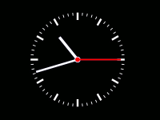
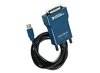

STM32 HSE oscillator stability problem
2. 5. 2017 7:54
I have implemented support for Precise Time Protocol in STM32 and it still performed bad. After some investigation, I have descovered stability problems of HSE.
Serial port capture to PCAP
24. 3. 2017 13:48
This tool can capture serial port traffic and store all data in PCAP format. It is later possible to open it by Wireshark and analyze it.
This tool was created to capture Modbus/RTU on RS-485 but can be used to any other similar traffic.
It is available on my Github https://github.com/…7/SerialPCAP
Spořič/Šetřič obrazovky (screensaver) - Hodiny
5. 11. 2013 15:12
 Hodiny (Clock)
This screensaver is clone of kclock.kss originally created by Melchior Franz
from KDE. It is written from scratch without any code from original project
because it is written in Delphi. This release is only in Czech localization.
Hodiny Stažení
Jedná se o klon kclock.kss, jehož původním autorem je Melchior Franz z KDE.
Úprava RC soupravy CADET 4
13. 9. 2013 11:51
Jsem úplný začátečník s RC letadly a tak jsem musel řešit situaci, jak se jednoduše naučit létat. Koupil jsem si školní model Beta 1400, ke které je přibalena vysílačka CADET 4 (Protokol V3). Vysílačku jsem rozebral a doplnil o potřebné části pro připojení k simulátoru. Vysílačka po úpravách dále bez problémů plní svoji původní funkci.
Open-Source SCPI / IEEE 488.2 Parser library
18. 11. 2012 15:23
SCPI / IEEE 488.2 Parser library is low footprint parser library for SCPI commands.
Main features are:
- expandable – define new command and its callback in one line. No duplicate informations.
- open source – Simplified BSD license
- basic IEEE 488.2 implementation
- basic mandatory SCPI commands implementation
Source: https://github.com/…/scpi-parser
Sleepy Cat IDE
12. 12. 2011 0:00
Při řešení grantu FRVŠ G1 2011/2011 pro podporu výuky mikroprocesorových systémů sme vytvořili platformu Sleepy Cat. Součástí této platformy je vývojové prostředí Sleepy Cat IDE a vývojová deska Sleepy Cat Kit.
Vývojové prostředí Sleepy Cat IDE je založeno na platformě NetBeans. Bylo upraveno pro potřeby vývoje aplikací pro mikrokontrolér s jádrem ARM. Obsahuje vývojové nástroje GNU Tools for ARM Embedded Processors, OpenOCD.
Použití USB-GPIB převodníku v Linuxu
16. 3. 2010 17:37
 Provozování zařízení komunikujících přes sběrnici GPIB je v Linuxu možné a to dokonce s využitím pouze Open Source.
Embedded Linux v kameře Jablocom EYE-02
25. 5. 2009 20:57
Vytvořil jsem port operačního systému Linux na kameru EYE-02 od firmy JabloCOM. Pro vytvoření kompletního systému pro nové zařízení jsem prošel několik kroků. První krok je vytvoření nebo získání nástrojů pro vytváření aplikací pro danou architekturu. Následně jsem upravil a nakonfiguroval jádro a pomocí těchto nástrojů jsem jej přeložil. Následovala část přeložení zbývajících programů a příprava souborového systému. Inicializaci systému jsem provedl pomocí vlastního bootloaderu, který z paměťové karty načetl binární obraz jádra a spustil ho.